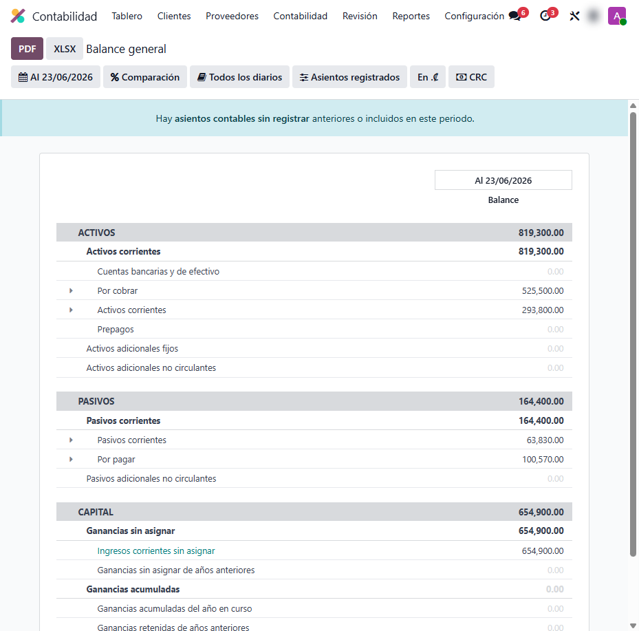
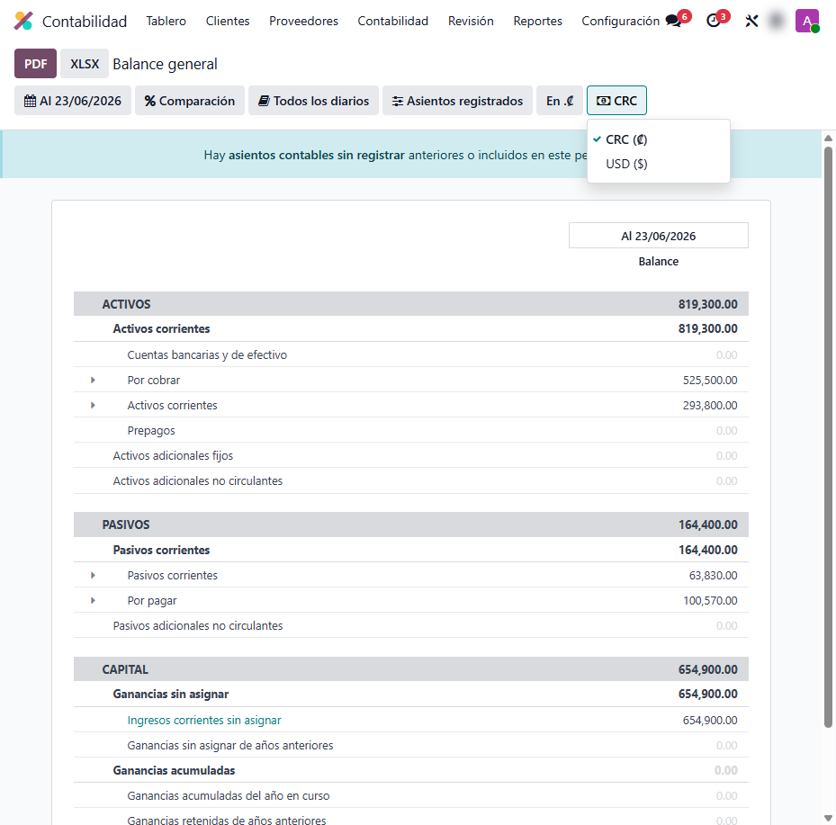
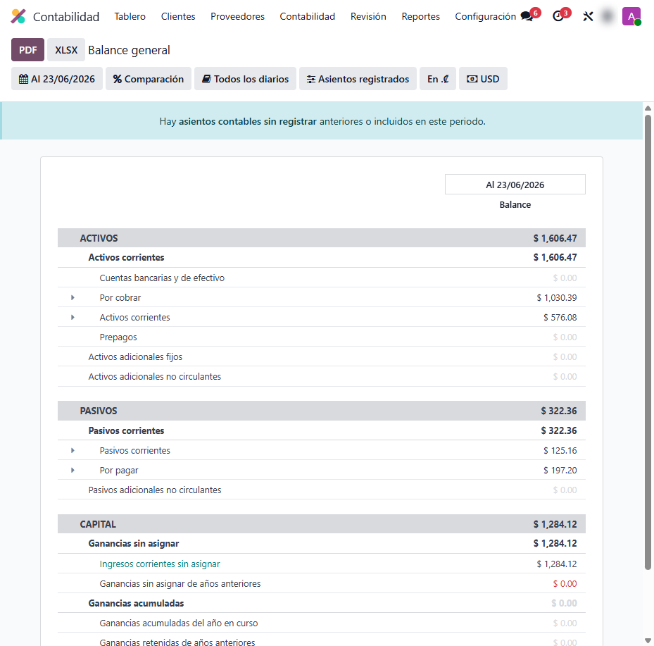
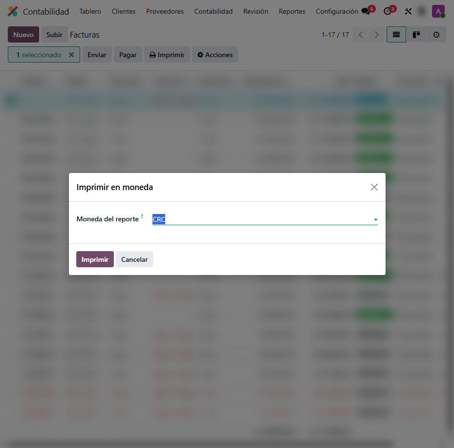

Conversión de Moneda en Reportes Contables
Presenta tus estados financieros y facturas en cualquier moneda con un clic. La contabilidad se mantiene en colones; el módulo convierte cada monto usando la tasa de cambio vigente en la fecha de cada movimiento.
Capturas del proyecto
01 / 05




Tu contabilidad está en colones, pero tu socio pide los números en dólares
Entregar un Balance General o un Estado de Resultados en otra moneda solía implicar exportar a Excel y reconvertir a mano cada saldo con una sola tasa, perdiendo precisión y horas de trabajo.
Este módulo agrega un selector de moneda a los reportes contables y a la impresión de facturas: al elegir otra moneda, cada movimiento se convierte con la tasa vigente en su propia fecha contable, sin tocar la contabilidad real.
Funcionalidades clave
-
Reportes en cualquier moneda
Balance, Resultados, Libro Mayor, Antigüedad de saldos y más, con un selector de moneda en la barra de filtros.
-
Tasa por fecha de cada asiento
Cada movimiento se convierte con la tasa vigente en su fecha contable, no con una tasa única para todo el período.
-
Facturas en otra moneda
Imprime el PDF de la factura electrónica en la moneda elegida desde el menú Acciones, sin reemitir el documento.
-
Sin alterar la contabilidad
La conversión es solo de presentación: los asientos y saldos reales permanecen en la moneda de la compañía.
-
Respeta los documentos legales
Los reportes tributarios que deben presentarse en colones (impuestos, D-104) quedan fuera de la conversión por diseño.
Tecnología detrás del producto
¿Necesitás tus estados financieros en varias monedas?
Adapto la conversión multimoneda a tu operación contable y a tu localización.